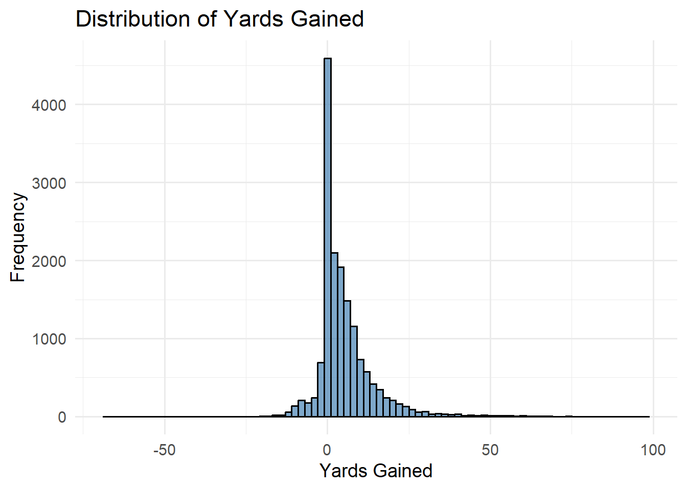
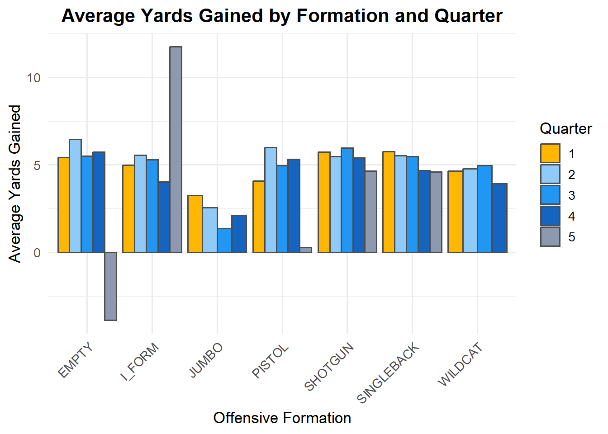

plays <- read.csv("plays.csv")
players <- read.csv("nfl-big-data-bowl-2025/players.csv")AnalyticalDay
Step 0:
Step 1: Clean data
colSums(is.na(plays)) gameId playId
0 0
playDescription quarter
0 0
down yardsToGo
0 0
possessionTeam defensiveTeam
0 0
yardlineSide yardlineNumber
224 0
gameClock preSnapHomeScore
0 0
preSnapVisitorScore playNullifiedByPenalty
0 0
absoluteYardlineNumber preSnapHomeTeamWinProbability
0 0
preSnapVisitorTeamWinProbability expectedPoints
0 0
offenseFormation receiverAlignment
188 188
playClockAtSnap passResult
1 0
passLength targetX
7398 7748
targetY playAction
7748 0
dropbackType dropbackDistance
5803 5966
passLocationType timeToThrow
6812 7419
timeInTackleBox timeToSack
7207 15516
passTippedAtLine unblockedPressure
6788 6369
qbSpike qbKneel
6788 0
qbSneak rushLocationType
9336 9336
penaltyYards prePenaltyYardsGained
15740 0
yardsGained homeTeamWinProbabilityAdded
0 0
visitorTeamWinProbilityAdded expectedPointsAdded
0 0
isDropback pff_runConceptPrimary
0 7053
pff_runConceptSecondary pff_runPassOption
13303 0
pff_passCoverage pff_manZone
192 192 handle_missing_values <- function(df, threshold = 0.7) {
# Step 1: Calculate percentage of missing values per column
missing_percentage <- colMeans(is.na(df))
# Step 2: Drop columns exceeding threshold
cols_to_drop <- names(missing_percentage[missing_percentage > threshold])
df <- df[ , !(names(df) %in% cols_to_drop)]
message("Dropped columns with more than ", threshold * 100, "% missing values: ",
paste(cols_to_drop, collapse = ", "))
# Step 3: Separate numeric and categorical columns
numeric_cols <- sapply(df, is.numeric)
categorical_cols <- !numeric_cols
# Step 4: Impute missing values
# Numeric: replace NA with mean
for (col in names(df)[numeric_cols]) {
df[[col]][is.na(df[[col]])] <- mean(df[[col]], na.rm = TRUE)
}
# Categorical: replace NA with mode (most frequent value)
mode_value <- function(x) {
ux <- unique(na.omit(x))
ux[which.max(tabulate(match(x, ux)))]
}
for (col in names(df)[categorical_cols]) {
df[[col]][is.na(df[[col]])] <- mode_value(df[[col]])
}
# Step 5: Verify cleanup
remaining_missing <- colSums(is.na(df))
message("\nRemaining missing values after handling:\n")
print(remaining_missing)
return(df)
}
clean_plays<-handle_missing_values(plays)Dropped columns with more than 70% missing values: timeToSack, penaltyYards, pff_runConceptSecondary
Remaining missing values after handling: gameId playId
0 0
playDescription quarter
0 0
down yardsToGo
0 0
possessionTeam defensiveTeam
0 0
yardlineSide yardlineNumber
0 0
gameClock preSnapHomeScore
0 0
preSnapVisitorScore playNullifiedByPenalty
0 0
absoluteYardlineNumber preSnapHomeTeamWinProbability
0 0
preSnapVisitorTeamWinProbability expectedPoints
0 0
offenseFormation receiverAlignment
0 0
playClockAtSnap passResult
0 0
passLength targetX
0 0
targetY playAction
0 0
dropbackType dropbackDistance
0 0
passLocationType timeToThrow
0 0
timeInTackleBox passTippedAtLine
0 0
unblockedPressure qbSpike
0 0
qbKneel qbSneak
0 0
rushLocationType prePenaltyYardsGained
0 0
yardsGained homeTeamWinProbabilityAdded
0 0
visitorTeamWinProbilityAdded expectedPointsAdded
0 0
isDropback pff_runConceptPrimary
0 0
pff_runPassOption pff_passCoverage
0 0
pff_manZone
0 STEP 2: Relationship BETWEEN OFFENSE FORMATION AND YARDGAINED A: Basic distribtuion of YardGained
library(ggplot2)Warning: package 'ggplot2' was built under R version 4.5.1ggplot(clean_plays, aes(x = yardsGained)) +
geom_histogram(binwidth = 2, fill = "steelblue", color = "black", alpha = 0.7) +
labs(title = "Distribution of Yards Gained",
x = "Yards Gained",
y = "Frequency") +
theme_minimal(base_size = 14)
Barplot of OffenseFormation
ggplot(clean_plays, aes(x = offenseFormation)) +
geom_bar(fill = "darkorange", color = "black", alpha = 0.8) +
labs(title = "Frequency of Offensive Formations",
x = "Offensive Formation",
y = "Count") +
theme_minimal(base_size = 14) +
theme(axis.text.x = element_text(angle = 45, hjust = 1))
Bar plot of distribution of passCoverage
ggplot(clean_plays, aes(x = pff_passCoverage)) +
geom_bar(fill = "seagreen3", color = "black", alpha = 0.8) +
labs(title = "Distribution of Pass Coverage Types",
x = "PFF Pass Coverage",
y = "Count") +
theme_minimal(base_size = 14) +
theme(axis.text.x = element_text(angle = 45, hjust = 1))
library(tidyverse)Warning: package 'tidyverse' was built under R version 4.5.1Warning: package 'tibble' was built under R version 4.5.1Warning: package 'tidyr' was built under R version 4.5.1Warning: package 'readr' was built under R version 4.5.1Warning: package 'purrr' was built under R version 4.5.1Warning: package 'dplyr' was built under R version 4.5.1Warning: package 'stringr' was built under R version 4.5.1Warning: package 'forcats' was built under R version 4.5.1Warning: package 'lubridate' was built under R version 4.5.1── Attaching core tidyverse packages ──────────────────────── tidyverse 2.0.0 ──
✔ dplyr 1.1.4 ✔ readr 2.1.5
✔ forcats 1.0.0 ✔ stringr 1.5.1
✔ lubridate 1.9.4 ✔ tibble 3.3.0
✔ purrr 1.1.0 ✔ tidyr 1.3.1
── Conflicts ────────────────────────────────────────── tidyverse_conflicts() ──
✖ dplyr::filter() masks stats::filter()
✖ dplyr::lag() masks stats::lag()
ℹ Use the conflicted package (<http://conflicted.r-lib.org/>) to force all conflicts to become errorsformation_success <- clean_plays %>%
group_by(offenseFormation) %>%
summarise(Average_Yards_Gained = mean(yardsGained, na.rm = TRUE)) %>%
arrange(desc(Average_Yards_Gained))
# Step 2: Print results in styled console output
cat("\nAverage Yards Gained by Formation:\n")
Average Yards Gained by Formation:cat(strrep("=", 50), "\n")================================================== cat(sprintf("%-25s %-25s\n", "Formation", "Average Yards Gained"))Formation Average Yards Gained cat(strrep("-", 50), "\n")-------------------------------------------------- for (i in seq_len(nrow(formation_success))) {
formation <- formation_success$offenseFormation[i]
yards <- formation_success$Average_Yards_Gained[i]
cat(sprintf("%-25s %-25.2f\n", formation, yards))
}EMPTY 5.78
SHOTGUN 5.59
SINGLEBACK 5.35
PISTOL 5.04
I_FORM 5.00
WILDCAT 4.64
JUMBO 2.33 # Step 3: Visualization (bar chart)
ggplot(formation_success, aes(x = reorder(offenseFormation, Average_Yards_Gained),
y = Average_Yards_Gained,
fill = Average_Yards_Gained>0))+
geom_bar(stat = "identity") +
scale_fill_manual(values = c("TRUE" = "seagreen3", "FALSE" = "firebrick2")) +
coord_flip() +
labs(
title = "Average Yards Gained by Offensive Formation",
x = "Offensive Formation",
y = "Average Yards Gained"
) +
theme_minimal(base_size = 14) +
theme(legend.position = "none")
Ok trying new plot with freq added to the graph
formation_summary <- clean_plays %>%
group_by(offenseFormation) %>%
summarise(
avg_yards = mean(yardsGained, na.rm = TRUE),
count = n()
)
ggplot(formation_summary, aes(x = reorder(offenseFormation, avg_yards))) +
geom_col(aes(y = count / max(count) * max(avg_yards)),
fill = "gray80", width = 0.6) +
geom_line(aes(y = avg_yards, group = 1, color = "Average Yards"), linewidth = 1.2) +
geom_point(aes(y = avg_yards, color = "Average Yards"), size = 3) +
coord_flip() +
scale_color_manual(values = c("Average Yards" = "darkgreen")) +
labs(
title = "Formation Effectiveness (Frequency vs Average Yards)",
x = "Offensive Formation",
y = "Scaled Count / Average Yards"
) +
theme_minimal(base_size = 14) +
theme(legend.title = element_blank())
Ok next is OffenseFormation by PassCoverage
Let’s group the pass_coverage to smaller group
clean_plays$coverage_group <- clean_plays$pff_passCoverage
clean_plays$coverage_group <- forcats::fct_collapse(
clean_plays$coverage_group,
Cover_3 = c("Cover-3", "Cover-3 Cloud Left", "Cover-3 Cloud Right",
"Cover-3 Seam", "Cover-3 Double Cloud"),
Cover_6 = c("Cover 6-Left", "Cover-6 Right"),
Cover_1 = c("Cover-1", "Cover-1 Double"),
Other_Rare = c("Bracket", "Miscellaneous", "Prevent", "2-Man", "Goal Line")
)See the distribution after grouping
ggplot(clean_plays, aes(x = coverage_group)) +
geom_bar(fill = "seagreen3", color = "black", alpha = 0.8) +
labs(title = "Distribution of Pass Coverage Types",
x = "PFF Pass Coverage",
y = "Count") +
theme_minimal(base_size = 14) +
theme(axis.text.x = element_text(angle = 45, hjust = 1))
Now run the plot
library(dplyr)
yards_by_formation_cov <- clean_plays %>%
group_by(offenseFormation, coverage_group) %>%
summarise(
avg_yards = mean(yardsGained, na.rm = TRUE),
play_count = n(),
.groups = "drop"
)Visualize it
library(ggplot2)
ggplot(yards_by_formation_cov,
aes(x = offenseFormation, y = avg_yards, fill = coverage_group)) +
geom_bar(stat = "identity", position = position_dodge(width = 0.9), color = "gray30") +
scale_fill_manual(
values = c(
"Cover-0" = "#FFD23F", # golden yellow
"Cover-1" = "#FFB703", # orange-yellow
"Cover-2" = "#90CAF9", # light blue
"Cover-3" = "#2196F3", # mid blue
"Cover-6" = "#1565C0", # deep blue
"Quarters" = "#6A1B9A", # purple accent
"Red Zone" = "#E63946", # red
"Other_Rare"= "#8D99AE" # neutral gray
)
) +
labs(
title = "Average Yards Gained by Formation and Pass Coverage",
x = "Offensive Formation",
y = "Average Yards Gained",
fill = "Pass Coverage Type"
)+
theme_minimal(base_size = 13) +
theme(axis.text.x = element_text(angle = 45, hjust = 1))
OK NOW OFFENSIVE FORMATION IN DIFFERENT QUARTER
Compute the yardGain by formation
library(dplyr)
# Summarize average yards by formation and quarter
yards_by_quarter <- clean_plays %>%
group_by(offenseFormation, quarter) %>%
summarise(
avg_yards = mean(yardsGained, na.rm = TRUE),
play_count = n(),
.groups = "drop"
)
# Print results
cat("\nAverage Yards Gained by Formation and Quarter:\n")
Average Yards Gained by Formation and Quarter:cat(strrep("=", 60), "\n")============================================================ cat(sprintf("%-15s %-10s %-20s %-10s\n",
"Formation", "Quarter", "Average Yards", "Plays"))Formation Quarter Average Yards Plays cat(strrep("-", 60), "\n")------------------------------------------------------------ for (i in seq_len(nrow(yards_by_quarter))) {
formation <- yards_by_quarter$offenseFormation[i]
quarter <- yards_by_quarter$quarter[i]
yards <- yards_by_quarter$avg_yards[i]
count <- yards_by_quarter$play_count[i]
cat(sprintf("%-15s %-10s %-20.2f %-10d\n", formation, quarter, yards, count))
}EMPTY 1 5.42 313
EMPTY 2 6.47 402
EMPTY 3 5.51 278
EMPTY 4 5.74 341
EMPTY 5 -3.88 8
I_FORM 1 4.97 320
I_FORM 2 5.55 251
I_FORM 3 5.29 228
I_FORM 4 4.03 232
I_FORM 5 11.75 4
JUMBO 1 3.26 27
JUMBO 2 2.54 35
JUMBO 3 1.36 25
JUMBO 4 2.11 38
PISTOL 1 4.09 159
PISTOL 2 5.99 164
PISTOL 3 4.97 164
PISTOL 4 5.33 147
PISTOL 5 0.29 7
SHOTGUN 1 5.74 1774
SHOTGUN 2 5.47 2583
SHOTGUN 3 5.96 1844
SHOTGUN 4 5.40 2695
SHOTGUN 5 4.65 83
SINGLEBACK 1 5.77 984
SINGLEBACK 2 5.52 918
SINGLEBACK 3 5.46 1034
SINGLEBACK 4 4.67 947
SINGLEBACK 5 4.59 32
WILDCAT 1 4.64 25
WILDCAT 2 4.78 23
WILDCAT 3 4.96 24
WILDCAT 4 3.93 15 GGPlot
library(ggplot2)
ggplot(yards_by_quarter,
aes(x = offenseFormation, y = avg_yards, fill = factor(quarter))) +
geom_bar(stat = "identity", position = position_dodge(width = 0.9), color = "gray30") +
scale_fill_manual(
values = c(
"1" = "#FFB703", # orange-yellow
"2" = "#90CAF9", # light blue
"3" = "#2196F3", # mid blue
"4" = "#1565C0", # deep blue
"5" = "#8D99AE" # gray-blue for OT
)
) +
labs(
title = "Average Yards Gained by Formation and Quarter",
x = "Offensive Formation",
y = "Average Yards Gained",
fill = "Quarter"
) +
theme_minimal(base_size = 13) +
theme(
axis.text.x = element_text(angle = 45, hjust = 1),
plot.title = element_text(face = "bold", hjust = 0.5)
)
CONDUCT AN ANOVA TEST
# Fit model with interaction term
model_interaction <- lm(yardsGained ~ offenseFormation *coverage_group , data = clean_plays)
# Show summary
summary(model_interaction)
Call:
lm(formula = yardsGained ~ offenseFormation * coverage_group,
data = clean_plays)
Residuals:
Min 1Q Median 3Q Max
-74.024 -5.385 -1.970 2.620 91.560
Coefficients: (1 not defined because of singularities)
Estimate Std. Error t value
(Intercept) 6.2683 1.3730 4.565
offenseFormationI_FORM -4.5350 2.1123 -2.147
offenseFormationJUMBO -5.8721 1.8285 -3.211
offenseFormationPISTOL -5.0183 4.6053 -1.090
offenseFormationSHOTGUN 0.1714 1.4695 0.117
offenseFormationSINGLEBACK -3.9720 1.8211 -2.181
offenseFormationWILDCAT -5.6016 5.2583 -1.065
coverage_groupCover-0 -1.8739 1.7245 -1.087
coverage_groupCover_1 0.3258 1.4732 0.221
coverage_groupCover-2 -0.7191 1.5118 -0.476
coverage_groupCover_3 0.3241 1.4475 0.224
coverage_groupCover_6 -0.6047 1.6087 -0.376
coverage_groupQuarters -1.2313 1.4843 -0.829
coverage_groupRed Zone -5.0461 1.8981 -2.658
offenseFormationI_FORM:coverage_groupCover-0 4.5229 2.7971 1.617
offenseFormationJUMBO:coverage_groupCover-0 3.5777 3.4873 1.026
offenseFormationPISTOL:coverage_groupCover-0 3.2239 5.0387 0.640
offenseFormationSHOTGUN:coverage_groupCover-0 -1.8700 1.8703 -1.000
offenseFormationSINGLEBACK:coverage_groupCover-0 2.2205 2.2265 0.997
offenseFormationWILDCAT:coverage_groupCover-0 6.0198 5.7939 1.039
offenseFormationI_FORM:coverage_groupCover_1 3.1387 2.2741 1.380
offenseFormationJUMBO:coverage_groupCover_1 3.4863 2.6171 1.332
offenseFormationPISTOL:coverage_groupCover_1 2.6454 4.7093 0.562
offenseFormationSHOTGUN:coverage_groupCover_1 -0.7411 1.5760 -0.470
offenseFormationSINGLEBACK:coverage_groupCover_1 2.7104 1.9235 1.409
offenseFormationWILDCAT:coverage_groupCover_1 5.6742 5.8631 0.968
offenseFormationI_FORM:coverage_groupCover-2 4.0602 2.3842 1.703
offenseFormationJUMBO:coverage_groupCover-2 0.3228 4.8029 0.067
offenseFormationPISTOL:coverage_groupCover-2 5.5502 4.8681 1.140
offenseFormationSHOTGUN:coverage_groupCover-2 0.5361 1.6201 0.331
offenseFormationSINGLEBACK:coverage_groupCover-2 4.2343 1.9880 2.130
offenseFormationWILDCAT:coverage_groupCover-2 14.0524 7.3358 1.916
offenseFormationI_FORM:coverage_groupCover_3 2.7364 2.1980 1.245
offenseFormationJUMBO:coverage_groupCover_3 4.3908 2.5330 1.733
offenseFormationPISTOL:coverage_groupCover_3 4.0937 4.6568 0.879
offenseFormationSHOTGUN:coverage_groupCover_3 -1.3788 1.5480 -0.891
offenseFormationSINGLEBACK:coverage_groupCover_3 2.9540 1.8893 1.564
offenseFormationWILDCAT:coverage_groupCover_3 2.8492 5.5634 0.512
offenseFormationI_FORM:coverage_groupCover_6 4.2982 2.4712 1.739
offenseFormationJUMBO:coverage_groupCover_6 NA NA NA
offenseFormationPISTOL:coverage_groupCover_6 4.8092 4.8650 0.989
offenseFormationSHOTGUN:coverage_groupCover_6 0.5447 1.7172 0.317
offenseFormationSINGLEBACK:coverage_groupCover_6 3.7711 2.0790 1.814
offenseFormationWILDCAT:coverage_groupCover_6 1.9380 10.2784 0.189
offenseFormationI_FORM:coverage_groupQuarters 6.5081 2.3598 2.758
offenseFormationJUMBO:coverage_groupQuarters 2.3350 6.5045 0.359
offenseFormationPISTOL:coverage_groupQuarters 4.7776 4.7162 1.013
offenseFormationSHOTGUN:coverage_groupQuarters 0.2967 1.5948 0.186
offenseFormationSINGLEBACK:coverage_groupQuarters 4.9051 1.9525 2.512
offenseFormationWILDCAT:coverage_groupQuarters 5.4469 5.7021 0.955
offenseFormationI_FORM:coverage_groupRed Zone 6.3461 2.9590 2.145
offenseFormationJUMBO:coverage_groupRed Zone 6.0498 4.5299 1.336
offenseFormationPISTOL:coverage_groupRed Zone 6.8913 5.1582 1.336
offenseFormationSHOTGUN:coverage_groupRed Zone 1.0839 2.0309 0.534
offenseFormationSINGLEBACK:coverage_groupRed Zone 5.6270 2.3900 2.354
offenseFormationWILDCAT:coverage_groupRed Zone 6.5794 6.0907 1.080
Pr(>|t|)
(Intercept) 5.02e-06 ***
offenseFormationI_FORM 0.03181 *
offenseFormationJUMBO 0.00132 **
offenseFormationPISTOL 0.27587
offenseFormationSHOTGUN 0.90713
offenseFormationSINGLEBACK 0.02919 *
offenseFormationWILDCAT 0.28676
coverage_groupCover-0 0.27720
coverage_groupCover_1 0.82498
coverage_groupCover-2 0.63435
coverage_groupCover_3 0.82284
coverage_groupCover_6 0.70702
coverage_groupQuarters 0.40684
coverage_groupRed Zone 0.00786 **
offenseFormationI_FORM:coverage_groupCover-0 0.10589
offenseFormationJUMBO:coverage_groupCover-0 0.30495
offenseFormationPISTOL:coverage_groupCover-0 0.52229
offenseFormationSHOTGUN:coverage_groupCover-0 0.31741
offenseFormationSINGLEBACK:coverage_groupCover-0 0.31863
offenseFormationWILDCAT:coverage_groupCover-0 0.29883
offenseFormationI_FORM:coverage_groupCover_1 0.16755
offenseFormationJUMBO:coverage_groupCover_1 0.18284
offenseFormationPISTOL:coverage_groupCover_1 0.57430
offenseFormationSHOTGUN:coverage_groupCover_1 0.63820
offenseFormationSINGLEBACK:coverage_groupCover_1 0.15883
offenseFormationWILDCAT:coverage_groupCover_1 0.33317
offenseFormationI_FORM:coverage_groupCover-2 0.08859 .
offenseFormationJUMBO:coverage_groupCover-2 0.94641
offenseFormationPISTOL:coverage_groupCover-2 0.25426
offenseFormationSHOTGUN:coverage_groupCover-2 0.74073
offenseFormationSINGLEBACK:coverage_groupCover-2 0.03319 *
offenseFormationWILDCAT:coverage_groupCover-2 0.05544 .
offenseFormationI_FORM:coverage_groupCover_3 0.21316
offenseFormationJUMBO:coverage_groupCover_3 0.08304 .
offenseFormationPISTOL:coverage_groupCover_3 0.37937
offenseFormationSHOTGUN:coverage_groupCover_3 0.37309
offenseFormationSINGLEBACK:coverage_groupCover_3 0.11794
offenseFormationWILDCAT:coverage_groupCover_3 0.60856
offenseFormationI_FORM:coverage_groupCover_6 0.08200 .
offenseFormationJUMBO:coverage_groupCover_6 NA
offenseFormationPISTOL:coverage_groupCover_6 0.32290
offenseFormationSHOTGUN:coverage_groupCover_6 0.75109
offenseFormationSINGLEBACK:coverage_groupCover_6 0.06971 .
offenseFormationWILDCAT:coverage_groupCover_6 0.85045
offenseFormationI_FORM:coverage_groupQuarters 0.00582 **
offenseFormationJUMBO:coverage_groupQuarters 0.71961
offenseFormationPISTOL:coverage_groupQuarters 0.31107
offenseFormationSHOTGUN:coverage_groupQuarters 0.85243
offenseFormationSINGLEBACK:coverage_groupQuarters 0.01201 *
offenseFormationWILDCAT:coverage_groupQuarters 0.33947
offenseFormationI_FORM:coverage_groupRed Zone 0.03199 *
offenseFormationJUMBO:coverage_groupRed Zone 0.18172
offenseFormationPISTOL:coverage_groupRed Zone 0.18157
offenseFormationSHOTGUN:coverage_groupRed Zone 0.59355
offenseFormationSINGLEBACK:coverage_groupRed Zone 0.01857 *
offenseFormationWILDCAT:coverage_groupRed Zone 0.28005
---
Signif. codes: 0 '***' 0.001 '**' 0.01 '*' 0.05 '.' 0.1 ' ' 1
Residual standard error: 8.792 on 16069 degrees of freedom
Multiple R-squared: 0.01268, Adjusted R-squared: 0.009358
F-statistic: 3.821 on 54 and 16069 DF, p-value: < 2.2e-16anova(model_interaction)Analysis of Variance Table
Response: yardsGained
Df Sum Sq Mean Sq F value Pr(>F)
offenseFormation 6 1960 326.61 4.2256 0.0002958 ***
coverage_group 7 9581 1368.72 17.7081 < 2.2e-16 ***
offenseFormation:coverage_group 41 4406 107.46 1.3903 0.0497594 *
Residuals 16069 1242028 77.29
---
Signif. codes: 0 '***' 0.001 '**' 0.01 '*' 0.05 '.' 0.1 ' ' 1GGPlot interaction plot
library(ggplot2)
library(dplyr)
interaction_summary <- clean_plays %>%
group_by(offenseFormation, coverage_group) %>%
summarise(mean_yards = mean(yardsGained, na.rm = TRUE))`summarise()` has grouped output by 'offenseFormation'. You can override using
the `.groups` argument.ggplot(interaction_summary,
aes(x = coverage_group, y = mean_yards, color = offenseFormation, group = offenseFormation)) +
geom_line(linewidth = 1.1) +
geom_point(size = 2) +
labs(
title = "Interaction of Offensive Formation and Pass Coverage on Yards Gained",
x = "Pass Coverage Type",
y = "Average Yards Gained",
color = "Offensive Formation"
) +
theme_minimal(base_size = 14) +
theme(axis.text.x = element_text(angle = 45, hjust = 1))